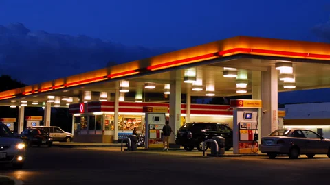

BOLIVIA
Anticipa situaciones críticas, optimiza el abastecimiento y asegura la continuidad operativa.
En situaciones de alta demanda o problemas de abastecimiento, las estaciones de servicio deben monitorear cuidadosamente sus reservas de combustible.
Este simulador permite estimar cuánto tiempo durará una reserva, identificar cuándo se alcanzará un nivel crítico y analizar diferentes escenarios de consumo.
Ingrese los datos para calcular la duración de la reserva.
Es la cantidad mínima de combustible que debe mantenerse como reserva de seguridad para evitar problemas de abastecimiento.
La siguiente tabla muestra cómo evoluciona la reserva según el consumo y reabastecimiento definido por el usuario.
| Día | Consumo | Reabastecimiento | Reserva | Estado |
|---|
Seleccione un escenario para cargar automáticamente los datos de prueba.
Abastecimiento normal.
Consumo elevado.
Situación crítica.
Este simulador permite visualizar cómo pequeñas variaciones en el consumo diario pueden afectar significativamente la duración de una reserva de combustible.